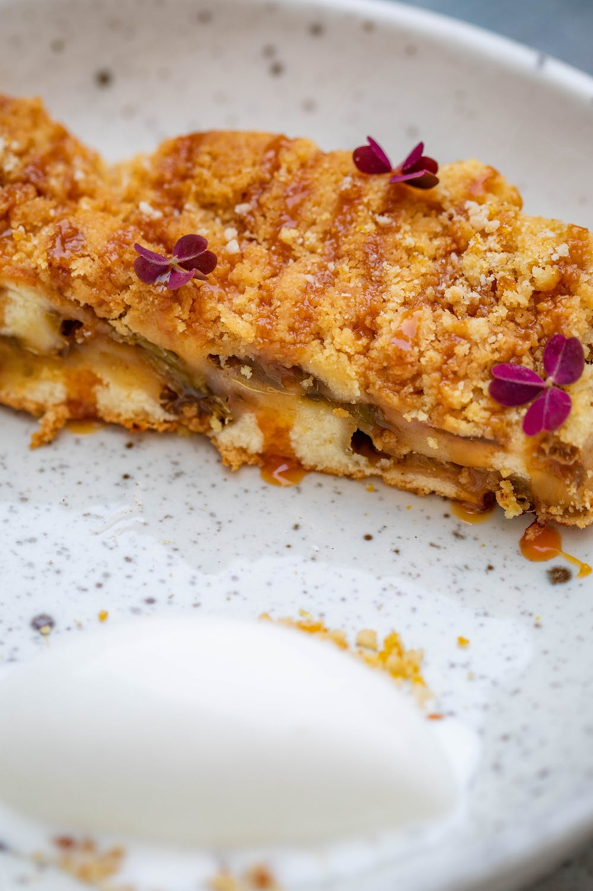

Apple Crumble

Description
Savor the comforting goodness of homemade apple crumble. Fresh, tart apples, gently spiced and baked beneath a buttery, cinnamon-kissed oat topping. This easy-to-follow recipe yields a warm, golden-brown dessert that delights with its sweet, fruity flavors and irresistible crispy texture. Perfect for any occasion, this apple crumble promises a cozy and delicious treat every time.
ingredients
- 4 cups sliced peeled Granny Smith apples
- 1 tablespoon water
- 1 teaspoon lemon juice
- 1 cup white sugar
- 3/4 cup all-purpose flour
- 1/2 teaspoon ground cinnamon
- 1/4 teaspoon ground nutmeg
- 1/4 teaspoon salt
- 1/2 cup cold unsalted butter, cut into small pieces
Directions
- Preheat the oven to 375 degrees F (190 degrees C).
- Pile sliced apples in an 8x10-inch casserole dish. Mix water and lemon juice together and sprinkle over apples.
- Combine sugar, flour, cinnamon, nutmeg, and salt in a mixing bowl. Mix well using an electric mixer. Add butter pieces and mix until mixture is crumbly; sprinkle evenly over apples.
- Bake in the preheated oven until bubbly and golden, about 45 minutes. Let cool slightly to thicken before serving in bowls.